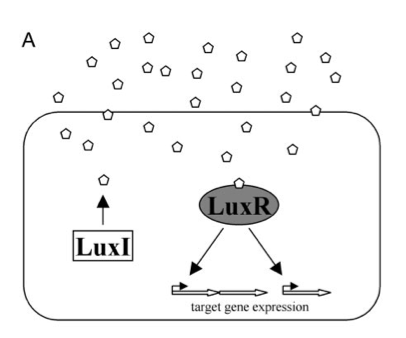
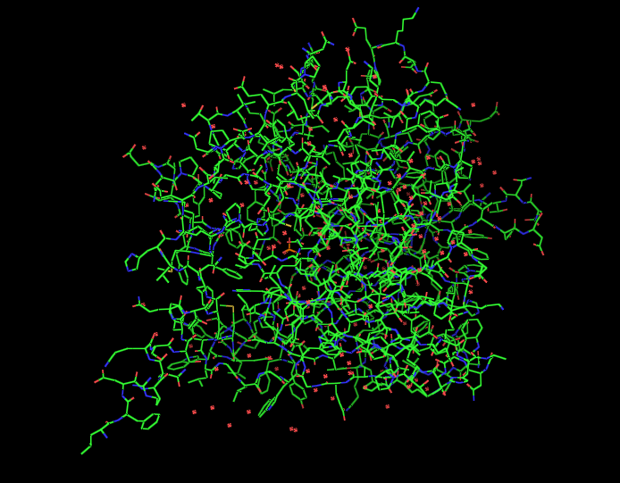
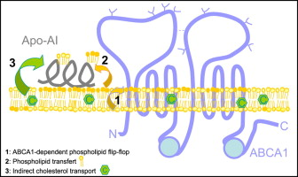

ABSTRACT
look at me, i'm an abstract... am i even necessary?
PHASE I
LUX OPERON
AHL or Acylated Homoserine Lactones belong to a class of autoinducers. These autoinducers act as chemical signaling molecules that gram-negative and gram-positive bacteria use as a way of communicating with one another. Additionally, this form of communication is used to regulate various physiological activities and more specifically virulence.
The detection of these autoinducers involves diffusion into the cells and binding to receptors. However, the binding autoinducers and receptors does not usually occur until a threshold concentration of autoinducers is reached. High concentrations of gram-negative and grampositive bacteria is often accompanied by a high concentration of autoinducers and so detection of these autoinducers is achieved in the presence of a high concentration of autoinducer producing bacteria [1]. This cell-cell communication in bacteria is a process called quorum sensing, which allows for bacteria to respond to fluctuations in the number of species present by altering physiological activities [1].
Acylated Homoserine Lactones are neutral lipid molecules composed of a homoserine lactone ring with an acyl chain. AHLs produced by different species of Gram-negative bacteria vary in length and composition of the acyl chain which contain 4 to 18 carbon atoms, making most quorum-sensing systems within bacterium species or group specific. AHLs are synthesized by AHL synthases and diffuse in and out of the cell by active or passive transport [1].
LuxR: LuxR is a gene that codes for the receptor protein that binds to the autoinducer. As the receptor binds to the autoinducer, the complex binds a specific sequence of DNA in front of the right operon and activates the expression of lux structural genes. The LuxR protein is at first inactive but when the autoinducer binds the receptor protein becomes activated. The LuxR-autoinducer complex binds to a 20 bp palindromic sequence, called the LuxBox [2].
LuxI: LuxI is a gene that synthesizes the autoinducer.
LuxBox: The LuxBox is a 20 bp palindromic promoter sequence. The binding of the luxR-autoinducer complex to this sequence increases RNA polymerase's affinity towards the promoter region of the LuxI and structural genes downstream of LuxI region [2].
[1] Taga, Michiko E., and Bonnie L. Bassler. "Chemical Communication among Bacteria."(Sackler NAS Colloquium) Chemical Communication in a Post-Genomic World. The National Academies, 25 Nov. 203. Web. 30 July 2013.
[2] Bluth, Brian J., Sarah E. Frew, and Brian McNally. "Cell-Cell Communication and the Lux Operon in Vibrio Fischeri." Bioluminescence and the Lux Operon in Vibrio Fischeri. Carnegie Mellon University, 31 July 2013. Web. 31 July 2013. https://www.bio.cmu.edu/courses/03441/TermPapers/97TermPapers/lux/default.html.
PON1
In humans, PON1 is synthesized in the liver and secreted into the blood. It is one of three members in the paraoxonase gene family. The family also includes PON2 and PON3, and together they are recognized as lactonases / lactonizing enzymes. All three PON genes are highly conserved in mammals, and PON – like proteins can be found in all animal species including fungi and bacteria. Needless to say, the PON family has important physiological roles. [1]
The PON family is catalytically promiscuous, and has evolved to develop divergent enzymatic functions in many species. Even though PON1 is actively known as a lactonase, another important function is its role in innate immunity. PON1 degrades AHL molecules, and is a promising candidate for quorum sensing interference therapy. AHLs are important quorum sensing mediators in bacteria that play major roles in the process of virulence. Because of PON1, interference with quorum sensing has been identified as a potential source of new treatments. Therefore, an excellent strategy for host defense would be to use PON1 enzymes to fight infection by AHL-sensing bacteria degradation. [2]
So how does PON1 work? Specific cases of virulence are driven by quorum sensing. When the density of a signal molecule like AHL increases, the virulence process is activated. PON1 acts on degrading those signal molecules like AHL, keeping the density of the signal molecules low, and putting quorum sensing to a halt. When all of this is done, prevention of quorum sensing dependent virulence from being activated is possible. [1][2]
PON1 is the newest and least studied member of its family. However, scientists were still able to figure out it’s typical day of AHL degradation on a molecular level. After the PON1 enzyme identifies the AHL signal molecule, AHL degradation could proceed in two ways. AHL degradation could proceed through opening of the lactone ring or by cleavage of the acyl side chain from the lactone ring. Because PON1 is so new it is not clear which of the two (or both) activities is responsible for the AHL inactivation. [1][2]
[1] "Human Paraoxonases (PON1, PON2, and PON3) Are Lactonases with Overlapping and Distinct Substrate Specificities." Human Paraoxonases (PON1, PON2, and PON3) Are Lactonases with Overlapping and Distinct Substrate Specificities. N.p., n.d. Web. 31 July 2013.
[2] Medina - Martinez, Maria S. "Degradation of N-Acyl-l-Homoserine Lactones by Bacillus Cereus in Culture Media and Pork Extract[down-pointing Small Open Triangle]."NCBI. N.p., n.d. Web.
GS LINKER


The fusion of two proteins and its ability to still function correctly is facilitated by the glycine serine linker. The fusion of two proteins, and therefore the expression, requires that the folding and attributes of one protein not affected by the other. This is usually not the case, an extreme example being when the last amino acid of a particular protein is near some sort of active site. If the other protein was to begin its formation from this point then the active site and the functionality of the first protein would be at risk. In order to eliminate such risk there are linkers used. Linkers usually contain amino acids that are not very active and would not harm the functionality of the protein, glycine and serine are two very common amino acids used for linkers. The linker would be composed so that there would be an alternating trend of glycine then serene. The amount of reiterations is variable and depends on the location on the protein where the last amino acid is located. Normally, there is one or two reiterations of the glycine and serine. Upon the proper insertion of a linker, the expression of two proteins will be joined with no decrease in activity or functionality.
We are using a glycine serine linker in our project to join the expression of Pon1 and GFP. The last amino acid of the Pon1 protein lies on the surface of the protein and is far away from any important locations. Therefore, we are implementing a 2 repeats of glycine serine to make sure no factors harm either protein’s function. The reason we are implementing this fusion is to have a clear indication when Pon1 in the cell has become active, GFP will become active and create green pigmentation, and to visually see the self-regulation that the lux operon and pon1 create. This, amongst other things, will allow us to do multiple assays about pon1 and its function.
ABCA1
The ATP Binding Cassette Transporter A1 (ABCA1) Gene is a member of the family of ATP-binding cassette (ABC) transporter proteins which transport molecules through cellular membranes [1]. These proteins are expressed in numerous organisms including bacteria, plants, fish, and mammals [1]. The process these proteins use to transport substrates across the cell membrane depends upon ATP hydrolysis [1]. In prokaryotes, ABC importers help with the intake of nutrients while ABC exporters remove toxins from cells in both prokaryotes and eukaryotes [1]. In eukaryotes, many ABC transporters move substrates from the cytoplasm into an organelle or across the cell membrane out of the cell [1].
Eukaryotes contain two types of ABC transporters: "full" and "half" transporters [1]. “Full” transporters contain two ABCs which bind and hydrolyze ATP to give energy for substrate transport. ABCA1 is one of 28 the human ABC transporters which are full transporters [1].
Some studies say that ABCA1 is a regulator of the transport of cholesterol and phospholipids [1]. The exact method that the transporter uses in its involvement in the transport of phospholipids is not certain [2]. It is thought to include movement of the substrate from the inner to the outer portion of the membrane, causing the general movement of the substrate outward from the cell [2]. This would occur in the presence of an acceptor molecule like apolipoprotein A-I (apo A-I) [2]. The methods of both cholesterol transport and apo A-I binding to ABCA1 are not defined [2]. It is still debated whether cholesterol is a direct substrate of ABCA1 [2]. It is also debated whether or not apo A-I directly binds to the transporter or another membrane [2].
Originally, ABCA1 was thought to be involved in phospholipid efflux which indirectly caused cholesterol efflux [2]. However, it has also been shown that overexpression of ABCA1 increased the amount of cholesterol available for efflux. This raises the idea that ABCA1 may directly affect cholesterol transport [2]. This would mean that ABCA1 may be able to bind to both, but may only actively transport phospholipids [2]. According to some studies, ABCA1 was not able to bind to cholesterol [2]. According to the study, cholesterol is not a primary substrate of ABCA1; cholesterol efflux is caused indirectly by phospholipid transport [2]. It is likely that ABCA1 causes phospholipid efflux from a membrane to an acceptor such as apo A-1, and then cholesterol transport occurs through diffusion [2].
Studies have shown that cholesterol efflux in cells that contained ABCA1 was dependent on apo A-I [2]. The data showed that apo A-I either binds to ABCA1 through low-affinity and/or transient interaction or does not bind directly to it at all [2]. The mechanisms used relating apo A-I, ABCA1, and phospholipids and cholesterol in transport are still debated. However, multiple studies have shown that ABCA1 is unlikely to bind cholesterol and apo A-I directly [2]. Recent studies have shown that it is possible that the ABCA1 activity helps form micro-domains on the plasma membrane for apo A-I to bind for release of cholesterol and phospholipids [2].
References Unformated:
(picture is from [2])
[1] http://www.sciencedirect.com/science/article/pii/S1388198111001363
[2] http://www.sciencedirect.com/science/article/pii/S0300908412004543
ASSAY
results!
PHASE II
look at me, i'm phase II
ROSETTA
lovely software indeed
FOLDIT
kinda like magic
MR DEEPAK PROTEIN
mr deepak, mr deepak, we'd like for you to continue mutating residues
ASSAY
more results!